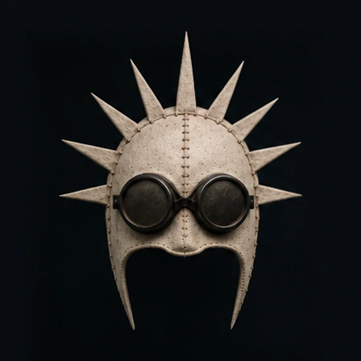

Torii & Hutukara
Torii & Hutukara é um álbum sobre viajar entre universos.
Torii é o nome japonês do portal que marca a entrada dos santuários xintoístas. Na cosmologia yanomami, Hutukara dá nome ao antigo céu que caiu e deu origem à terra-floresta.
No universo do álbum, vestir a máscara abre a passagem para outras realidades de Hutukara.